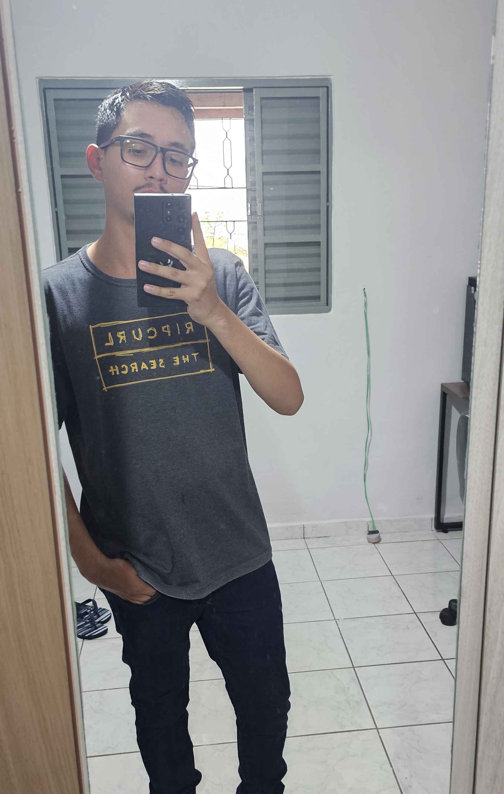

Sobre mim
Olá, meu nome é Lucas Roberto, sou desenvolvedor web, estou cursando meu quinto semestre de desenvolvimento de software multiplataforma na Fatec Jacareí e sou um desenvolvedor apaixonado por tecnologia. Atualmente estou estudando para me tornar um desenvolvedor full stack.
Minha jornada nesse mundo começou com um pequeno projeto de escola para criar um blog, e a sensação de criar algo do zero pela primeira vez foi o que me encantou e me fez querer seguir por essa área.
Atualmente estou estudando HTML, CSS, JavaScripte MySQL, e pretendo aprender mais sobre React, Node.js e MongoDB.
Habilidades
Projetos Acadêmicos

Expert Treinamentos
Elaboração de site para capacitar pessoas de empresas à uma visão unificada sobre como aplicar corretamente a metodologia ágil Scrum. Neste projeto, fui responsável por organizar as telas e configurar o estilo com CSS.
Ver no GitHub
Bicicreta
Desenvolvimento de um site para aluguel de bicicletas, com o intuito de unir quem tem uma bicicleta e quer alugá-la, com quem não tem e gostaria de adquirir uma, com segurança e eficácia. Neste projeto, fiquei responsável por trabalhar nas rotas e controllers do BackEnd como DEV.
Ver no GitHub
Vintura
Desenvolvimento de um site para checagem e triagem de dados de funcionarios e projetos.Neste projeto, atuando como desenvolvedor, fui responsável pela criação e configuração das rotas do back-end, além da criação e integração de algumas páginas do front-end.
Ver no GitHub
DaVinci Care
Desenvolvimento de um aplicativo para acompanhar as dietas e metas caloricas do usuário.Neste último projeto, fui responsável apenas pela parte do front-end e pela integração entre o back-end e o front-end.
Ver no GitHub